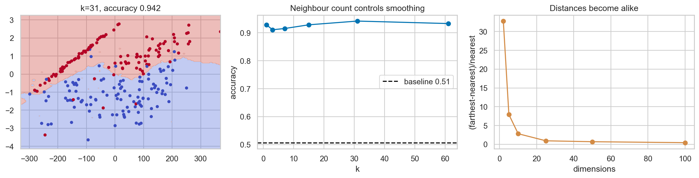

ML Hands-on Lab · 03 — Instance-based
k-nearest neighbours
1. The one-sentence version
k-NN predicts from the labels of the most similar stored examples, so its intelligence lives in the distance, scaling, and k you choose.
2. The intuition
Ask the closest neighbours for advice. One neighbour is reactive; a whole town votes the global majority. The useful circle is somewhere between.
A five-item example
If a query's five neighbour labels are [A,A,B,A,B], k=1 predicts the closest label while k=5 votes A by 3–2. Larger k smooths individual accidents but can wash out small regions.
3. The maths in plain English
\[\hat y(x)=\operatorname{mode}\{y_i:i\in N_k(x)\},\quad d(x,z)=\sqrt{\sum_j(x_j-z_j)^2}\]
Nk is the set of k closest training cases. d is Euclidean distance. Each squared coordinate adds to closeness, which is why a large-unit feature can dominate.
4. What the model is actually doing during training
- Learn training-set center and scale.
- Store scaled training vectors and labels.
- For a query, compute its distance to every stored vector.
- Select k smallest distances and combine their labels, optionally weighting nearer votes more.
5. The knobs
| Knob | Too low | Too high |
|---|---|---|
| k | Jagged boundary and noisy votes. | Local structure is averaged away. |
| distance weights | Far neighbours count equally. | One nearly identical point can dominate. |
| metric | May ignore useful coordinate structure. | A complex learned metric can overfit. |
6. Assumptions and failure modes
Closeness must correspond to outcome similarity, features need compatible scales, training coverage must include the query region, and irrelevant dimensions should be controlled.

7. Code
Minimal version
model = make_pipeline(StandardScaler(), KNeighborsClassifier(n_neighbors=7))
model.fit(X_train, y_train)
prediction = model.predict(X_test)Realistic version
params={"kneighborsclassifier__n_neighbors":[3,7,15,31],
"kneighborsclassifier__weights":["uniform","distance"]}
model=GridSearchCV(make_pipeline(StandardScaler(),KNeighborsClassifier()),
params,cv=5).fit(X_train,y_train)8. Where it's actually used
- Finding comparable properties for real-estate estimates.
- Recognizing activities from nearby sensor windows.
- Case-based medical decision support on carefully normalized measurements.
- A simple retrieval baseline before building a learned ranker.
9. How it relates to its neighbours
Vector search is the retrieval version of the same geometry at larger scale. RBF SVMs also rely on local similarity but compress it into support vectors. Radius-neighbours uses a distance cutoff instead of a fixed vote count.